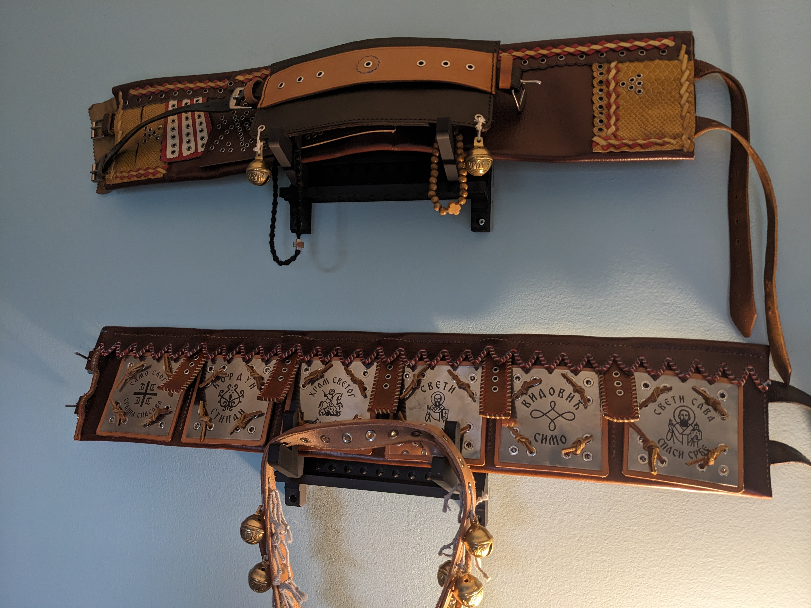

The following was written as a response to a post of a friend's on Facebook about favorite items. I thought it'd be good to capture it here.

Some things are heirlooms. Some things probably aren't, but they turn into them anyway. For me it's been 'in vacuum of all else'. On my father's side, a handful of artefacts from my great-grandfather are in my possession: two rifles and a shotgun, and his hunting vest. Just one from my grandfather, which is his special belt. It's hung up in my office, above the one I made for myself, behind the one I made for my son. On my mother's side a small trove of medals from a bygone era: a history forgotten and asking for rediscovery, if only from a little dedication of time.
And then the items I've made, or acquired, which I plan to give to my children. Some pieces of traditional clothing, the belt I'd mentioned, some books that are barely obtainable if not effectively non-existent... the majority of the items could be taken or left, but I have a few in mind that I'd like to persist over generations. But that won't be my choice. All I can do is leave them and hope. It's up to the next generation to preserve them, and every successive generation will make that choice.
And that's something I think about a lot. What do we choose to preserve, and why? What items? If items, which ones, and why? They remind me of a time or a person. They remind me of a history or a story or a culture. Sometimes it's just a matter of course. But when you hold them, the memories live. I have always said that the real inheritance will be the skill to reconstruct the ornaments that are important to me -- those belts, guns ... because then they can be celebrated from scratch all over, supposing that something was lost.
What stories? If stories, which ones, and why? Will I pass down the pain, the joy? Both? No history makes much sense without both. That is a challenging line to walk. It's either pass down the family's origin myth or it's gone, and that's that. The book "Stipan na Brdovitom Kordunu" is a painful artefact, a bloody dress. It does not exist. It has no ISBN. Its pages detail a sad story of a place that now lies dormant, a distant memory. No less, it is one of the very few pieces of proof I can physically lay my hands on so far away from that sleeping dream which proves that it was ever there. Its final pages answer the question, "well if it's empty, where did everyone go?" by literally detailing where the families moved to abroad -- and our family is there, and my father's address is, too.
Sleeping memories.
Sleeping time.
You don't get it for free, you don't get anything for free. Things are forgotten when forgetting is chosen. Lots has been lost. But why preserve it? Why not just let it go? Because forgetting has a price. There's something abstract and intangible that's very mentally and spiritually tangible when such memories are lost. Identity, roots, place: all of these things are defined, in part, by the traditions, stories, and history that are passed to us from our forebears.
Distill it. What's really required? Do we need the objects? What do we need? Do we just need the stories? What do we need? Do we just need some skills? How do we ensure that what matters to us matters to our children? This is a question I'm anxious to find the answer to. I don't know. I really do not. It is a struggle to make anyone care about anything in particular. It's one of the greatest challenges of my life.
Still, continue. The culture, the traditions, the pieces of history are like the embers to a fire that was dimming. Here we are at the hearth, each of us making a choice. Do you feed the fire? Are there other fires that require tending? And of what value is each? Which one will you stoke? Which ones will you let lie? How do you make the choice?
Still, continue. Sometimes people leave places for reasons of sorrow. Sometimes a return was the un-won dream of the first generation. Remembering those reasons and the lessons learned from them, but also celebrating those holy martyrs for their sacrifice, and not letting that sacrifice be forgotten: these are a big piece of why I continue.
Sometimes I feel I'm the fool. I put on a costume that puts me out of time and place to demonstrate something that was, a fragmented and partial reminder, half-hand-made, of some place I've never been to, all so that it won't be forgotten. And if I look strange or silly that's OK. Sometimes I feel I'm the magician, burning the candle at both ends to make it happen. Even then I often feel I'm the fool, because I feel alone. And it's hard to feel alone in something. I joke, "there are dozens of us!" And that's a maybe. And if I'm alone, there's probably a reason. I must be swimming upstream?
Memories, today, tomorrow. Traditions, yesterday, today. All of this is scattered, because it's hard for me to make a coherent message out of the varied and complex feelings I have around this kind of thing. If I had a pencil that had just enough lead for one sentence that could be passed down alongside my pile of weird junk to my grandchildren, I guess the message I could muster would just be THIS WAS IMPORTANT TO ME.
That's all I've really got at the end of the day: at the end of the flowery words, the abstract messages, the over-thinking. Distill it. This was important to me. That's it, that's all. If you dive into the heap to find out why, I'll have succeeded. If you don't, then at least I had a fun, weird time.